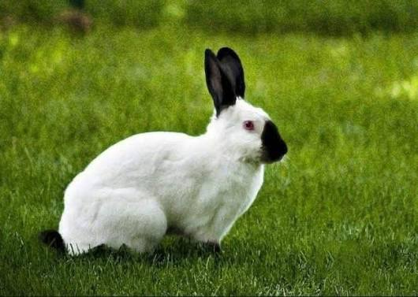

Razas domesticas de los conejos
Las razas de conejo doméstico se clasifican principalmente según su tamaño y tipo de pelaje en tres grandes grupos: pequeños, medianos y grandes.
Las razas mas conocidas del grupo pequeño son el Enano Holandés y el Belier Holandés.


Las razas mas conocidas del grupo medianos son el Conejo Rex y el Conejo Californiano.


Las razas mas conocidas del grupo grande son el Gigante de Flandes y el Gigante Continental.